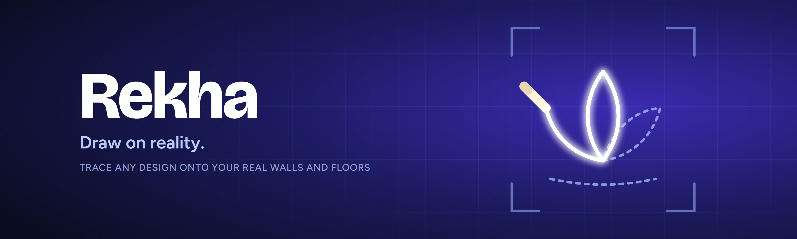

Draw on reality.
Rekha turns your Meta Quest 3 into a tracing projector. A glowing guide appears on your real wall or floor, and you follow it with real chalk, pencil, brush or paint. The guide is virtual – the art you make is real.
How it works
1. Pick a design
Choose from Beginner, Intermediate and Advanced designs, or import your own image from your Quest.
2. Place it
Point and pinch to move it onto any wall, floor or table. Drag corners to resize; rotate with a snap to 90°.
3. Lock it
The guide stays fixed to your room while you draw, even as you move around.
4. Trace
Draw with real materials, then hide the guide to check your work.
Features
- Mixed-reality passthrough with room-anchored placement
- Hand tracking with a palm menu, finger taps and pinch-to-drag, or Touch controllers
- Optional photo-to-sketch conversion (Bold, Medium, Fine)
- Grid overlay for the classic grid drawing method
- Opacity, line colour, mirror, flip and 3-point calibration
- Dark, Light and Midnight themes, click sounds and haptics
Free and private
No ads, no account and no subscription. Rekha works offline and your images never leave your headset. Read the privacy policy.